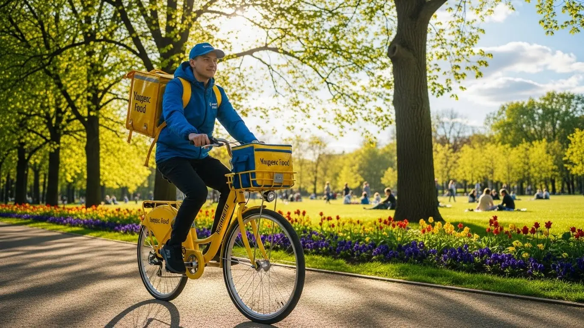
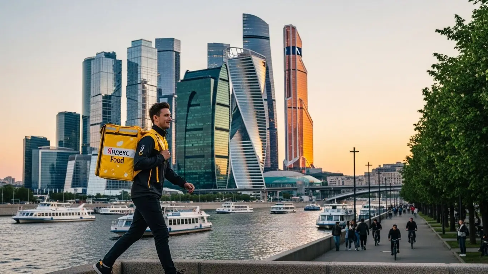

Работа курьером Яндекс Еда в Кирове: доход и условия в 2025-2026

- Работа курьером Яндекс Еды в Кирове: для кого эта вакансия и что вы получите
- Сколько вы будете зарабатывать курьером в Кирове: калькулятор дохода и разбор выплат
- Реальный заработок курьера в Кирове: смены и месячный доход
- График работы и форматы занятости
- Требования к кандидату и документы
- Самозанятость, налоги и юридическая чистота
- Пошаговое оформление и первый выход на линию в Кирове
- Пешком, на вело или на авто: что выгоднее в Кирове
- Районы, маршруты и «топовые» зоны заказов в Кирове
- Безопасность, страховка, штрафы и оплата простоя
- Плюсы и возможные минусы работы курьером в Кирове
- Реальные истории и отзывы курьеров из Кирова
- Ответы на главные вопросы о работе курьером Яндекс Еды в Кирове
- Короткие ответы на главные вопросы
- Итоги и ваш следующий шаг
Все города
Думаешь, работа курьером в Кирове — это просто включить приложение и грести деньги лопатой? Как бы не так. Боишься, что будешь жечь свой бензин или «убивать» велосипед по нашим дорогам, а в итоге получишь копейки, пару штрафов и застрянешь в вечной пробке на Октябрьском проспекте? Правильно боишься. Забудь про рекламные обещания о «доходе до 100 тысяч». Здесь — только реальный опыт работы курьером Яндекс Еды в нашем городе, без прикрас.
Поверь, 9 из 10 новичков в Кирове наступают на одни и те же грабли, а потом уходят через месяц, разочаровавшись. Они не считают реальные расходы на транспорт, не понимают, как работает система приоритета и почему в центре заказов густо, а в условных Чистых Прудах можно прождать час. В итоге — пустые смены, усталость и миф о том, что «в Яндексе не заработать». Заработать можно, и неплохо, но только если заранее понимать, как эта кухня устроена изнутри именно в Кирове. Если же вы ищете официальную страницу с анкетой и краткими условиями, то вся информация про работу курьером Яндекс Еда в Кирове собрана там.
В этом гиде мы честно разберём, на чём выгоднее всего работать в Кирове — пешком, на велосипеде или на авто. Посчитаем, сколько реально чистыми выходит в час и за смену с учётом наших пробок, погоды и спроса. Я покажу на карте «хлебные» районы, где всегда есть заказы, и расскажу, как не терять время впустую. И главное — выясним, за что на самом деле штрафуют, как этого избежать и что делать, если что-то пошло не так.
Меня зовут Алексей. Я сам не один год откатал с жёлтым рюкзаком по Кирову, а сейчас у меня свой небольшой таксопарк-партнёр. Так что я знаю эту систему с двух сторон и расскажу всё как есть, без рекламной шелухи. Считай, что это разговор со старшим товарищем, который уже набил все шишки за тебя. Готов? Тогда давай по порядку, сейчас всё разложу по полочкам.
Чтобы ты не запутался во всех деталях, я сделал короткий навигатор по статье.
Что ты точно узнаешь из этого разбора
В этой статье ты ТОЧНО узнаешь:
- Сколько на самом деле можно заработать в Кирове за смену пешком, на велосипеде или авто?
- В каких районах Кирова (от центра до ЮЗР) всегда есть заказы и как выбирать «хлебные» слоты в приложении?
- За что реально штрафуют и блокируют, и как рейтинг влияет на количество заказов?
- Как погода, время суток и выходные дни превращаются в дополнительные деньги благодаря коэффициентам?
- Насколько сложно оформить самозанятость и сколько налогов придётся платить с дохода?
А если тебе некогда читать всю статью — переходи сразу к заключению, где ты найдёшь короткие ответы на все эти вопросы и указания, в каких разделах искать подробности.
Для начала — главные цифры и условия работы в Кирове в одной картинке.
Работа курьером в Кирове: ключевые цифры
Доход в час
350–500 ₽
В часы высокого спроса и с бонусами
За смену 8 часов
2 800–4 000 ₽
Средний заработок за полный день работы
Доход в неделю
14 000–20 000 ₽
При графике 5/2 и полной занятости
Чаевые от клиентов
+10–15%
Дополнительно к доходу, полностью ваши
Работа курьером Яндекс Еды в Кирове: для кого эта вакансия и что вы получите
Скажу прямо: работа курьером — это не про лёгкие деньги, но это один из самых быстрых способов заработка в Кирове, если у тебя есть голова на плечах и ноги (или колёса). Эта вакансия в Яндекс Еде — своего рода конструктор. Ты сам решаешь, когда и сколько работать, а система обеспечивает тебя заказами и прозрачными выплатами. Здесь нет начальника, который стоит над душой, но есть ответственность перед клиентом и сервисом.
По опыту скажу, что в Кирове эта сфера только набирает обороты. Люди всё больше заказывают еду из ресторанов и продукты из магазинов, поэтому заказы есть всегда, особенно в пиковые часы. Главное — понять, подходит ли тебе такой формат. Это не офисная рутина, а постоянное движение и общение с разными людьми. Если ты готов к этому, то сможешь обеспечить себе стабильный доход.
Вот живой пример. У меня начинал работать парень, студент ВятГУ. Жил в общежитии, денег, как обычно, не хватало. Начал как пеший курьер в центре, выходил на 3–4 часа после пар через приложение Яндекс Про. Заказов в обеденное и вечернее время там всегда много. Уже за первую неделю он спокойно заработал себе на карманные расходы и оплату интернета, работая всего по 15–20 часов. Для него это был идеальный вариант подработки, который не мешал учёбе.
В общем, работа курьером в Яндекс Еде — это реальная возможность заработать без начального опыта и сложных требований. Ты получаешь деньги за конкретно выполненную работу, а твой доход напрямую зависит от твоего желания и времени, которое ты готов уделить доставкам.
Кому подойдёт эта работа в Кирове
Эта работа универсальна и подходит многим, но особенно хорошо она вписывается в жизнь определённых категорий людей. Во-первых, это студенты. Гибкий график позволяет легко совмещать смены с учёбой, выходить на пару часов между парами или вечером. А ежедневные выплаты для молодых ребят всегда актуальны.
Во-вторых, это люди, которым нужна подработка или дополнительный доход. Если у тебя есть основная работа со сменным графиком (например, 2/2) или ты просто хочешь подзаработать в выходные — это отличный вариант. Ты сам выбираешь слоты в приложении «Яндекс Про» и выходишь на линию, когда тебе удобно. Никаких обязательств работать полный день. Также это хороший старт для тех, у кого нет опыта работы — здесь всему научат на коротком онлайн-инструктаже.
Наконец, это водители, которые хотят использовать свой автомобиль для заработка, но не готовы возить пассажиров в такси. Доставка заказов на авто — самый прибыльный формат для водителя-курьера. Ты можешь брать дальние заказы, работать в любую погоду и зарабатывать значительно больше. Если тебе важны быстрые выплаты и полный контроль над своим временем, эта вакансия для тебя.
Главные преимущества для жителей районов Юго-Западный, Октябрьский, Ленинский
Одно из главных удобств — возможность работать рядом с домом. Тебе не нужно тратить час-полтора на дорогу до «офиса», ты просто выходишь из подъезда, включаешь приложение и начинаешь выполнять заказы в своём районе. Это экономит и время, и деньги на проезд.
Например, если ты живёшь в Юго-Западном районе, у тебя под боком много жилых домов, а значит, и много заказов из местных кафе и магазинов. Тебе не придётся ехать в центр, чтобы найти работу. То же самое касается и жителей Октябрьского района, особенно в районе улицы Дружбы или ТЦ «Jam Молл» — там всегда зоны высокого спроса.
Для тех, кто живёт в Ленинском районе (центр), вообще раздолье. Здесь сосредоточено большинство ресторанов, кафе и бизнес-центров. Плотность заказов максимальная, особенно в обеденное и вечернее время. Можно работать как пеший курьер или велокурьер, эффективно выполняя короткие доставки одну за другой. По сути, ты можешь выбрать любой район Кирова, где тебе удобно, и зарабатывать там.
Краткое обещание по доходу и условиям
Если говорить о деньгах, то в Кирове реальный заработок курьера зависит от формата работы и количества часов. При частичной занятости, работая по 3–4 часа в день, можно рассчитывать на 1000–1800 рублей за смену. Если же выходить на полную занятость (8–10 часов), то автокурьер может зарабатывать и 3000–4000 рублей в день, особенно в выходные или плохую погоду, когда действуют повышенные коэффициенты. В месяц при полной занятости вполне реально выходить на доход в 60 000–85 000 рублей.
Ключевые условия просты и прозрачны. Во-первых, это свободный график — ты сам решаешь, когда выходить на смены. Во-вторых, ежедневные выплаты на карту для самозанятых, что позволяет сразу видеть результат своей работы. В-третьих, начать можно без опыта — всему необходимому научат на коротком онлайн-тренинге. От тебя требуется только смартфон на Android, желание работать и быть ответственным.
Сколько вы будете зарабатывать курьером в Кирове: калькулятор дохода и разбор выплат
Самый частый вопрос, который мне задают новички: «Сколько я буду реально зарабатывать?». Ответ всегда один: твой доход — это не фиксированная зарплата, а сумма нескольких составляющих. Понимание этой механики — ключ к тому, чтобы зарабатывать больше. Система в «Яндекс Про» абсолютно прозрачна: ты видишь стоимость каждого заказа ещё до того, как его принять.
Важно не просто бездумно кататься по городу, а анализировать, где и когда выгоднее работать. Например, в дождь или снегопад всегда включаются повышающие коэффициенты, и стоимость заказа может вырасти в 1,5–2 раза. То же самое происходит в пятницу вечером или в выходные дни, когда спрос на доставку максимальный.
Один из моих водителей-курьеров поначалу брал все заказы подряд и в конце дня удивлялся, почему заработок не такой высокий, как он ожидал. Я посоветовал ему обращать внимание на карту спроса в приложении Яндекс Про — зоны, подсвеченные фиолетовым, означают повышенный коэффициент. Он стал планировать свои смены на вечернее время и выходные, выбирая именно эти зоны. В итоге его средний доход в час вырос почти на треть без увеличения количества рабочих часов.
Поэтому, прежде чем выходить на линию, изучи, из чего складывается твой заработок. Это поможет тебе работать умнее, а не больше, и получать от своей работы максимум.
Из чего складывается доход курьера
Твой итоговый заработок за смену — это не просто сумма за выполненные заказы. Он состоит из нескольких частей, и важно понимать каждую из них.
- Оплата за заказ. Это базовая стоимость за то, что ты забираешь и доставляешь заказ. Она зависит от сервиса (Яндекс Еда, Яндекс Доставка).
- Доплата за расстояние. Чем дальше ехать от ресторана до клиента, тем больше доплата. Система рассчитывает оптимальный маршрут и платит за каждый его километр.
- Повышающие коэффициенты. В часы пик (обед, ужин), в плохую погоду или в районах с высоким спросом включаются множители. Стоимость заказа умножается на этот коэффициент, что позволяет заработать значительно больше.
- Бонусы. Яндекс часто предлагает персональные цели и бонусы. Например, «выполни 10 заказов за день и получи дополнительно 500 рублей». Это отличный стимул для активной работы.
- Чаевые. Клиенты могут оставить чаевые прямо в приложении. Они полностью твои, сервис не берёт с них комиссию.
- Оплата простоя. Если ты приехал в ресторан, а заказ ещё не готов, включается платное ожидание. Твоё время — это деньги, и сервис это компенсирует.
- Компенсация проезда. На некоторых заказах, особенно если нужно добираться до точки на общественном транспорте, может быть предусмотрена компенсация стоимости проезда.

Как пользоваться калькулятором дохода
На странице вакансии есть специальный калькулятор, который поможет тебе прикинуть примерный заработок. Это не точная цифра до копейки, а ориентир, основанный на средних показателях по Кирову. Пользоваться им просто.
Сначала выбери свой город — Киров. Затем укажи тип доставки: пеший курьер, велокурьер или водитель-курьер на авто. После этого выбери, сколько часов в день и сколько дней в неделю ты планируешь работать. На основе этих данных калькулятор покажет тебе примерный диапазон твоего дневного и месячного дохода. Это поможет тебе понять, на какие цифры можно ориентироваться при полной занятости или подработке.
Калькулятор дохода курьера в Кирове
Примерный доход в месяц:
64 000 ₽
Это примерный расчёт на основе средней ставки в Кирове. Реальный доход зависит от спроса, бонусов и вашего рейтинга.
Чтобы получить более точный прогноз, воспользуйся калькулятором. А если хочешь сразу увидеть все актуальные условия, требования и заполнить анкету, загляни на страницу работа курьером Яндекс Еда в твоём городе — там собрана вся официальная информация.
Примеры расчёта для пешего, вело- и авто‑курьера в Кирове
Давай разберём на конкретных примерах, сколько можно заработать в Кирове в разных форматах.
- Пеший курьер в центре. Допустим, ты студент и выходишь на 4-часовую смену в центре (район Театральной площади, улицы Воровского) в обеденное время. Заказы здесь короткие, но их много. За час можно успеть сделать 2–3 доставки. Средняя стоимость заказа с учётом небольшого расстояния — 120–150 рублей. За 4 часа можно заработать около 1000–1400 рублей.
- Велокурьер в спальных районах. Ты работаешь на велосипеде и берёшь 6-часовую смену, катаясь между Юго-Западным районом и районом Филейки. Расстояния больше, но на велосипеде ты быстрее пешего курьера и не стоишь в пробках. Заказы здесь могут быть дороже за счёт километража. За смену вполне реально заработать 1800–2500 рублей.
- Водитель-курьер по всему городу. Ты работаешь на своей машине полный 8-часовой день, берёшь заказы по всему Кирову, включая отдалённые районы вроде Нововятска. В плохую погоду включается повышенный коэффициент. Ты можешь выполнять дорогие и дальние заказы. Твой заработок за такой день может составить 3000–4500 рублей и даже больше, если поймать хорошие бонусы.
Сравнение потенциального дохода курьеров в Кирове
| Параметр | Пеший курьер | Велокурьер | Авто-курьер |
|---|---|---|---|
| Средний доход за смену (4-6 часов) | 1000 - 1600 ₽ | 1500 - 2200 ₽ | 2000 - 3000 ₽ |
| Главное преимущество | Работа в плотной застройке, фитнес | Скорость, маневренность, экономия | Высокий доход, комфорт, дальние заказы |
| Оптимальные зоны в Кирове | Центр (Ленинский район) | Спальные районы (ЮЗР, Октябрьский) | Весь город, включая пригород |
| Зависимость от погоды | Высокая | Средняя | Низкая |
Реальный заработок курьера в Кирове: смены и месячный доход
Теперь о самом главном — о деньгах. Никаких «до 100 500 тысяч», только реальные цифры, которые я вижу у своих ребят в Кирове и зарабатывал сам, выполняя заказы Яндекс Еды и Доставки. Твой доход — это не какая-то фиксированная ставка, а результат твоей работы, умноженный на смекалку. Он зависит от того, как ты двигаешься (пешком, на велике или на авто), когда выходишь на линию и в каких районах работаешь. Но если подойти к делу с головой, заработок будет стабильным и предсказуемым.
Главное, что нужно понять: в этой работе ты сам себе начальник. Сколько потопаешь, столько и полопаешь. Можно выходить на пару часов после основной работы, чтобы закрыть кредит, а можно сделать доставку основной профессией и зарабатывать на уровне среднего офисного сотрудника, только без душного кабинета и со свободным графиком.
Диапазон дохода для подработки и полной занятости
Цифры, которые я привожу, — это средний доход в Кирове за вычетом налога для самозанятых (6%). Расходы на транспорт (проезд, бензин, обслуживание) сюда не входят, это нужно учитывать отдельно.
Если это подработка (2–4 часа в день, несколько раз в неделю):
- Пеший курьер: Идеально для центра, где всё рядом. За вечерний слот в 3-4 часа можно заработать 600–1000 рублей. В месяц выходит в среднем 12 000 – 20 000 рублей, если работать регулярно.
- Курьер на велосипеде: Ты быстрее, заказов больше. За те же 3-4 часа можно получить 800–1500 рублей. В месяц это уже 18 000 – 30 000 рублей. Отличный вариант для студентов.
- Курьер на автомобиле: Самый высокий потенциал, особенно если ловить пиковые часы. За короткую смену можно привезти 1200–2000 рублей. В месяц на подработке выходит 25 000 – 40 000 рублей «грязными».
Если это полная занятость (8–10 часов в день, 5/2 или 2/2):
- Пеший курьер: Физически тяжело, но реально. За полный день выходит 1800–2500 рублей. В месяц можно рассчитывать на 40 000 – 55 000 рублей.
- Велокурьер: Золотая середина. Дневной заработок — 2500–3500 рублей. В месяц это уже серьёзные 50 000 – 75 000 рублей.
- Автокурьер: Здесь самые большие цифры, но и самые большие расходы. За день можно заработать 3500–5500 рублей. В месяц это может быть и 70 000, и 90 000 рублей, но помни про бензин, амортизацию и ТО. Чистыми остаётся примерно на 25-30% меньше.
Как район, время суток и погода влияют на доход
Доход курьера — это не просто плата за время, а вознаграждение за спрос. Где он выше, там и платят больше. В Кирове есть свои закономерности.
Главный твой друг — это повышающий коэффициент. В приложении «Яндекс Про» зоны с высоким спросом окрашиваются в разные цвета, от зелёного до фиолетового. Чем ярче зона, тем больше доплата к каждому заказу.
Эти зоны появляются, когда курьеров не хватает, а заказов от клиентов Яндекс Еды — вал. Например, в обеденный пик (с 12:00 до 14:00) и вечерний (с 18:00 до 21:00) центр города, районы у ТРЦ «Jam Молл» или «Глобус» почти всегда «горят». То же самое происходит в пятницу вечером и все выходные.
А теперь про погоду. Для курьера плохая погода — это хорошая погода. Как только в Кирове начинается дождь, снегопад или сильный мороз, люди сидят дома и заказывают еду. Коэффициенты взлетают до небес. В такие дни можно за 4 часа заработать как за целый обычный день. Плюс, клиенты в непогоду чаще оставляют хорошие чаевые — ценят твой труд.
Советы по увеличению заработка от опытных курьеров
Просто выйти на линию и ждать заказов — стратегия так себе. Чтобы зарабатывать больше, нужно думать.
- Планируй слоты. Не выходи в «мёртвые» часы, вроде утра вторника. Заранее бронируй в приложении плановые слоты на вечернее время и выходные. Они разбираются быстро.
- Знай свои зоны. Не надо метаться из Юго-Западного района в Нововятск за одним заказом с высоким коэффициентом. Выбери 2-3 смежных района, которые хорошо знаешь, и работай там. Например, центр и район у ЦУМа — там много ресторанов, откуда поступают заказы Яндекс Еды, которые веером расходятся по ближайшим жилым кварталам.
- Будь вежлив и опрятен. Банально, но это работает. Вежливый курьер получает чаевые в 2-3 раза чаще. Простая улыбка и пожелание приятного аппетита могут принести тебе лишние 100-200 рублей к заказу.
- Не отказывайся от заказов без причины. Рейтинг активности в приложении напрямую влияет на то, как часто тебе будут приходить новые заказы. Чем он выше, тем ты в большем приоритете у системы.
Вот недавний пример из практики. Парень на велосипеде, студент, обычно за 4-часовой вечерний слот в районе Дружбы зарабатывал 1000-1200 рублей. А в прошлую субботу, когда лил дождь, он вышел на тот же слот. Карта в приложении была фиолетовой. В итоге за те же 4 часа он привёз домой 2400 рублей и 300 рублей чаевыми. Вот тебе и магия погоды и высокого спроса.
Сравнение дохода в Кирове по типам занятости
| Параметр | Пеший курьер | Велокурьер | Автокурьер |
|---|---|---|---|
| Подработка (в месяц) | 12 000 – 20 000 ₽ | 18 000 – 30 000 ₽ | 25 000 – 40 000 ₽ |
| Полная занятость (в месяц) | 40 000 – 55 000 ₽ | 50 000 – 75 000 ₽ | 65 000 – 90 000 ₽ (до вычета расходов) |
| Лучшие зоны | Центр (ул. Ленина, Воровского) | Центр, Юго-Запад, Дружба | Весь город, дальние районы, пригород |
В сухом остатке: твой доход в Кирове напрямую зависит от выбранной стратегии. Не ленись, изучай карту спроса в «Яндекс Про», лови пиковые часы и плохую погоду. Самый простой совет: работай тогда, когда другие отдыхают — по вечерам, в выходные и праздники. Именно в это время делаются самые большие деньги.
График работы и форматы занятости
Одно из главных преимуществ работы курьером — свободный график. Ты сам решаешь, когда и сколько работать, без начальника, который стоит над душой с 8 до 17. Это идеальный вариант, чтобы совмещать доставку с учёбой, основной работой или просто жить в своём ритме. Сервис даёт тебе инструмент — приложение «Яндекс Про», а как им пользоваться, решаешь ты.
Хочешь — выходи каждый день на 8-10 часов и преврати это в полноценную работу. Хочешь — катайся пару часов по вечерам для души и дополнительного дохода. Главное — правильно всё спланировать, чтобы не просто тратить время, а эффективно зарабатывать.
Подработка после учёбы или основной работы
Совмещать доставку с чем-то ещё — самый популярный сценарий. Вот пара живых примеров из Кирова.
Пример 1: Студент ВятГУ. Парень учится на дневном. После пар, примерно с 18:00 до 22:00, он садится на велосипед и катает заказы в своём районе — у парка Победы и на Юго-Западе. Выходит так 3-4 раза в неделю плюс один полный день в субботу. В итоге за месяц у него набегает 20-25 тысяч рублей. Этого с лихвой хватает на личные расходы, и у родителей просить не надо.
Пример 2: Менеджер в офисе. Мужик работает в офисе 5/2. У него есть своя машина. Чтобы быстрее закрыть автокредит, он выходит на линию в пятницу вечером и в субботу на 5-6 часов. В это время самый пик заказов, высокие коэффициенты. Он не упахивается, но стабильно привозит домой дополнительные 7-10 тысяч в неделю. За месяц набегает приличная сумма, которая идёт прямо на погашение кредита.
Полная занятость: как выглядит типичный день курьера
Если ты решил сделать доставку своей основной работой, твой день будет строиться вокруг пиков спроса. Вот как это обычно выглядит у опытного курьера на автомобиле в Кирове.
- 10:00–11:00. Выход на линию. Утро обычно спокойное. Можно начать с района своего проживания, например, с Филейки, и выполнить несколько заказов из Яндекс Лавки или магазинов-партнёров.
- 12:00–15:00. Обед. Спрос резко растёт. Самое время переместиться в центр, в район Театральной площади или ЦУМа. Здесь много кафе и офисов, заказы Яндекс Еды идут один за другим. После 15:00 можно сделать перерыв на обед и отдых.
- 15:00–18:00. Относительное затишье. В это время выгодно брать дальние заказы в рамках Яндекс Доставки, например, в Нововятск или в новые микрорайоны типа Чистых Прудов. За них хорошо платят, а пробок меньше.
- 18:00–22:00. Вечерний пик, самое денежное время. Заказы из ресторанов через Яндекс Еду разлетаются по спальным районам. Здесь главное — скорость и знание коротких путей.
- После 22:00. Спрос падает. Можно либо завершить смену, либо остаться на линии и выполнять ночные заказы из круглосуточных магазинов — их меньше, но и конкуренция ниже.
Как планировать слоты и выходы через приложение «Яндекс Про»
Твой главный инструмент планирования — это раздел «Расписание» в приложении «Яндекс Про». Там можно заранее выбрать и забронировать плановые слоты — отрезки времени, в которые ты обязуешься работать в определённой зоне.
Почему это важно?
- Во-первых, забронировав слот, ты гарантируешь себе работу. Самые «хлебные» слоты — вечера пятницы, субботы и воскресенья — разбирают за несколько дней.
- Во-вторых, на плановых слотах часто действуют бонусы и минимальная гарантированная оплата. Даже если заказов будет мало, сервис доплатит тебе до определённой суммы.
Критически важно начинать слот вовремя. Если ты забронировал его с 18:00, то ровно в 18:00 нужно нажать кнопку «На линии» и быть в выбранной геолокации. Опоздания негативно влияют на твой рейтинг, а от него зависит, как часто система будет предлагать тебе заказы. Чем выше рейтинг, тем ты в большем приоритете.
Вот история одного новичка. Он сначала работал в свободном режиме, выходил когда вздумается. Зарабатывал копейки, потому что попадал в часы низкого спроса. Я ему посоветовал начать планировать. Он стал заранее бронировать 4-часовые вечерние слоты в своём Ленинском районе. Его доход сразу вырос почти вдвое и, что важнее, стал стабильным.
В итоге, свободный график — это не анархия, а свобода выбора. Чтобы эта свобода приносила деньги, её нужно грамотно планировать через «Яндекс Про». Пробуй разные слоты, изучай карту спроса и находи свой идеальный ритм работы.
Требования к кандидату и документы
Многих новичков пугает, что для работы курьером нужен какой-то особый опыт или кипа бумаг. На деле всё гораздо проще. Требования у Яндекса минимальные, и это сделано специально, чтобы человек мог быстро начать зарабатывать, а не бегать по инстанциям. Главное — твоё желание, а с формальностями разберёмся.
По сути, если тебе есть 18 лет, ты гражданин РФ или одной из стран ЕАЭС и у тебя есть базовый набор документов, то считай, ты уже подходишь. Это отличная работа без опыта — никто не будет смотреть на твоё образование или предыдущие места трудоустройства. Важно, чтобы ты был в состоянии выполнять заказы, то есть мог передвигаться по городу и был адекватен в общении.
У меня был случай с парнем, который переехал в Киров из другого региона. У него из документов с собой был только паспорт и ИНН, который он нашёл на сайте налоговой. Он думал, что оформление займёт неделю. В итоге он заполнил анкету вечером, а уже утром зарегистрировался как самозанятый прямо в телефоне.
К обеду парень получил доступ к заказам. Вся процедура от «я ничего не знаю» до первого заработка заняла меньше суток. Это лучший пример того, что никаких реальных преград для старта нет. В общем, основной барьер здесь — в голове. Требования к курьеру простые и понятные, а сбор документов не требует никаких усилий. Главный совет: перед заполнением анкеты просто положи рядом паспорт и проверь, что знаешь свой ИНН — это ускорит процесс в разы.
Возраст, гражданство и базовые условия
Давай по порядку разберёмся, что нужно для старта. Первое и самое главное — возраст. На работу курьером в Яндекс Еду берут строго с 18 лет. Никаких исключений для 16-летних, даже с согласия родителей, здесь нет. Это связано с материальной ответственностью и юридическими тонкостями договора. Второе — гражданство. Подойдёт паспорт гражданина РФ или одной из стран Евразийского экономического союза (ЕАЭС): Беларусь, Казахстан, Армения, Кыргызстан.
Кроме того, есть несколько базовых, но очевидных условий. Ты должен быть в нормальной физической форме, чтобы без проблем доставлять заказы. Это особенно важно, если ты пеший курьер или передвигаешься на велосипеде и за смену проходишь несколько километров. Для автокурьера, само собой, нужны водительские права и автомобиль. Ещё один критически важный инструмент — твой смартфон. Он должен быть на платформе Android, так как рабочее приложение «Яндекс Про» работает только на ней. Убедись, что у тебя стабильный мобильный интернет и рабочий GPS, иначе работать будет невозможно.
Какие документы нужны для работы курьером
Список документов для оформления максимально короткий, и скорее всего, всё нужное у тебя уже есть под рукой. Тебе не придётся собирать справки или стоять в очередях.
Вот что понадобится:
- Паспорт. Основной документ, удостоверяющий твою личность. Нужен будет для заполнения анкеты и регистрации в качестве самозанятого.
- ИНН (Идентификационный номер налогоплательщика). Он нужен для уплаты налогов. Если ты не помнишь свой номер, его можно за пару минут бесплатно узнать на официальном сайте ФНС по паспортным данным.
- Личная банковская карта. Подойдёт карта любого российского банка (МИР, Visa, MasterCard). На неё ты будешь получать выплаты. Важно, чтобы карта была оформлена именно на тебя.
- Медицинская книжка. Здесь ситуация неоднозначная. Для доставки запечатанных заказов из ресторанов она, как правило, не требуется. Но если ты планируешь доставлять продукты из магазинов, партнёры могут её запросить. Лучше уточнить этот момент для Кирова на этапе оформления, но для большинства курьеров Еды она не нужна.
Можно ли работать с 16 лет и какие есть альтернативы
Сразу отвечу честно и прямо: устроиться курьером в Яндекс Еду с 16 или 17 лет нельзя. Минимальный возраст для начала работы — полные 18 лет. Это жёсткое правило компании, связанное с полной материальной ответственностью за заказы и денежные средства, а также с необходимостью заключать официальный договор как самозанятый исполнитель, что доступно в полной мере только совершеннолетним.
Понимаю, что в этом возрасте хочется иметь свои деньги, поэтому не стоит опускать руки. В Кирове есть другие варианты подработки для подростков. Например, можно устроиться промоутером и раздавать листовки — там часто берут с 16 лет. Некоторые местные кафе или небольшие заведения могут нанять помощника на кухню или в зал. Также можно поискать простые задачи на фриланс-биржах, не требующие специальных навыков. Это, конечно, не работа курьером со свободным графиком, но как временный вариант для заработка вполне подойдёт.
Самозанятость, налоги и юридическая чистота
Многих пугают слова «самозанятость» и «налоги». Кажется, что это сложно, муторно и вообще какая-то ловушка. На самом деле, это самый простой и прозрачный способ работать на себя и получать официальный доход. Яндекс выбрал эту модель не чтобы усложнить жизнь курьерам, а наоборот — чтобы всё было легально, быстро и без лишней бюрократии. Работа «всерую» за наличку — это всегда риски, а здесь ты полностью защищён.
Самозанятость — это, по сути, партнёрство. Ты не сотрудник в штате, а независимый исполнитель. Это даёт тебе свободу выбирать, когда и сколько работать, без начальников и жёсткого графика. А государству это даёт понимание, что ты получаешь доход и платишь с него минимальный налог. Весь процесс максимально автоматизирован и происходит прямо в твоём телефоне.
Один из моих водителей, мужик старой закалки, долго сомневался. Говорил: «Лёш, я в этих ваших интернетах ничего не понимаю, какие налоги, какие приложения?». Я ему показал, как скачать «Мой налог», и он зарегистрировался буквально за 10 минут, пока ждал заказ.
Через месяц, когда ему пришёл первый счёт на налог в пару сотен рублей, он сам удивился, насколько всё просто. А через полгода этот официальный доход помог ему без проблем получить небольшой кредит на ремонт машины. Так что не стоит бояться этого статуса. Самозанятость — это твой ключ к легальной работе с ежедневными выплатами и без головной боли с отчётностью. Это современный и удобный формат, который идеально подходит для работы курьером.
Почему курьеры Яндекс Еды работают как самозанятые
Формат самозанятости (или, официально, налог на профессиональный доход — НПД) выбран как основной по нескольким причинам. Во-первых, это даёт тебе максимальную гибкость. Ты не привязан к трудовому договору, не обязан отрабатывать определённое количество часов. Ты сам себе хозяин: захотел — вышел на линию, устал — ушёл домой. Трудовой кодекс такой свободы не предусматривает.
Во-вторых, это юридическая чистота и официальный доход. Все деньги, которые ты получаешь от Яндекса, — «белые». Это значит, что ты можешь, например, взять кредит в банке или получить визу, подтвердив свой заработок справкой из приложения «Мой налог». При этом нет никакой сложной бухгалтерии: не нужно сдавать декларации и вести отчётность, как это делают индивидуальные предприниматели. Всё происходит автоматически. Это самый простой способ легализовать свой доход от подработки.
Как за 10 минут оформить самозанятость через «Мой налог»
Процесс регистрации до смешного прост и занимает не больше 10 минут. Тебе даже не нужно выходить из дома. Всё делается через официальное приложение Федеральной налоговой службы «Мой налог».
Вот пошаговая инструкция:
- Скачай приложение. Найди в Google Play (для Android) приложение «Мой налог» и установи его.
- Начни регистрацию. Открой приложение и нажми на кнопку регистрации. Самый простой способ — «По паспорту РФ».
- Отсканируй паспорт. Наведи камеру телефона на главный разворот паспорта (где фотография). Приложение само распознает все данные.
- Сделай селфи. Дальше приложение попросит тебя сделать фото лица. Это нужно для подтверждения личности, чтобы никто не смог зарегистрироваться по твоему паспорту.
- Подтверди данные. Проверь, правильно ли система распознала твои ФИО и паспортные данные, и подтверди регистрацию. Всё, ты официально стал самозанятым. Весь процесс обычно занимает 5–10 минут.
Кстати, часто зарегистрироваться можно ещё проще — прямо через приложение «Яндекс Про» в процессе оформления или через приложения некоторых банков, например, Сбербанка. Система сама проведёт тебя по всем шагам.
Сколько и как платить налоги
Здесь тоже всё максимально прозрачно и просто. Ставка налога для самозанятого, который получает доход от юридического лица (в нашем случае — от Яндекса), составляет 6%. Не 13%, как НДФЛ при работе по трудовому договору, а именно 6%. Никаких других скрытых сборов или отчислений нет.
Процесс уплаты налога полностью автоматизирован. Тебе не нужно ничего считать вручную. Яндекс сам передаёт данные о твоих выплатах в налоговую. До 12-го числа каждого месяца, следующего за отчётным, в приложении «Мой налог» тебе будет приходить уведомление о начисленной сумме. Например, налог за работу в мае появится до 12 июня. Оплатить его нужно до 28-го числа этого же месяца. Сделать это можно прямо в приложении, привязав банковскую карту. Это проще, чем платить за мобильную связь.
Работать официально и платить небольшой налог гораздо безопаснее, чем получать «серый» кэш. Это даёт тебе спокойствие, защищает от возможных проблем с налоговой службой в будущем и открывает доступ к финансовым продуктам, как любому человеку с официальным доходом.
Пошаговое оформление и первый выход на линию в Кирове
Многие думают, что устроиться курьером в Яндекс Еду — это долго и муторно, с кучей бумажек и собеседований. На деле всё гораздо проще и быстрее, особенно если делать всё онлайн. Весь процесс от анкеты до первого заработка занимает от нескольких часов до одного дня. Это отличный вариант для подработки со свободным графиком: главное — не тупить и следовать простым шагам, которые система сама тебе подсказывает. Никаких начальников и отделов кадров, всё решается через приложение.
Тут нет никакого подвоха. Сервису постоянно нужны новые курьеры, особенно в растущих районах Кирова, поэтому условия работы максимально упростили. Если у тебя есть нужные документы и смартфон, считай, ты уже почти на линии. Весь путь построен так, чтобы убрать лишние барьеры и дать человеку возможность начать зарабатывать без опыта как можно скорее.
Шаг 1–2: анкета и онлайн‑обучение
Всё начинается с простой анкеты на сайте. Никаких вопросов про твои карьерные амбиции или кем ты видишь себя через пять лет. Нужны только базовые данные и документы: ФИО, дата рождения, номер телефона и гражданство. Заполняется это дело буквально за 5–10 минут. Для оформления выплат в дальнейшем понадобится статус самозанятого, но об этом система расскажет позже.
После заполнения твои данные уходят на быструю проверку, которая обычно занимает меньше часа. Как только она пройдена, тебе на телефон приходит ссылка на короткое онлайн‑обучение. Это не нудные лекции, а несколько коротких видеороликов и тестов. Там объясняют основы: как пользоваться приложением «Яндекс Про», как общаться с клиентами и работниками ресторанов, что делать в нестандартных ситуациях. Тесты простые, на внимательность. Прошёл их — и ты готов к следующему шагу.
Шаг 3: получение сумки и доступа к заказам в Кирове
После успешного обучения тебе нужно получить главный инструмент — фирменную жёлтую термосумку (или термокороб). Без неё к заказам «Яндекс Еды» не допустят, так как важно сохранять температуру блюд. В Кирове получить экипировку можно несколькими способами: в специальном курьерском центре или через партнёров сервиса. Иногда сумку могут даже привезти доставкой.
Конкретные адреса и время работы точек выдачи появятся у тебя прямо в приложении «Яндекс Про» после завершения обучения. Там же будет указано, что нужно взять с собой (обычно только паспорт). Как только ты забираешь сумку и активируешь её в приложении, тебе открывается полный доступ к заказам. С этого момента ты — полноценный курьер-партнёр сервиса.
Шаг 4: первый слот и первый доход
Теперь самое интересное — выход на линию. Ты открываешь «Яндекс Про», смотришь на карту Кирова и видишь зоны с доступными слотами (заранее запланированными сменами) и свободными выходами. Для первого раза мой тебе совет: выбери свой район или тот, который знаешь как свои пять пальцев. Так ты не будешь тратить время на навигатор и будешь чувствовать себя увереннее.
Выбираешь слот на удобное время, например, на пару часов вечером, нажимаешь кнопку «Начать» — и всё, ты на линии. Приложение сразу начнёт искать для тебя ближайшие заказы. Первый заказ может прилететь уже через пару минут. Выполняешь его, за ним второй, третий… А уже на следующий день видишь на своём балансе первые заработанные деньги. Это и есть те самые почти ежедневные выплаты, о которых многие говорят.
Из практики: один парень, студент, решил подработать. Утром в 10:00 заполнил анкету, к 12:00 прошёл обучение. Днём съездил в офис на улице Воровского, забрал короб. Вечером в 18:00 вышел на первый слот в своём Юго-Западном районе. За три часа спокойно сделал 6 заказов из местных кафешек и заработал около 800 рублей чистыми, не считая чаевых. Говорит, даже не ожидал, что всё так быстро.
В итоге, весь процесс, как устроиться курьером, — это простая и понятная последовательность действий, которую можно завершить за один день. Главное — иметь под рукой документы и желание работать. Мой совет: не откладывай обучение и получение сумки, чем быстрее пройдёшь эти формальности, тем быстрее начнут капать реальные деньги.
Пешком, на вело или на авто: что выгоднее в Кирове
Выбор транспорта — одно из ключевых решений, которое напрямую влияет на твой доход и условия работы. В Кирове у каждого формата есть свои плюсы и зоны, где он показывает себя лучше всего. Нет универсального ответа, что лучше, — всё зависит от твоих целей, физической формы и того, в каком районе города ты планируешь работать чаще всего.
Кто-то предпочитает неспешные прогулки по центру, превращая работу в фитнес. Другие гоняют на велосипеде между спальными районами, обгоняя пробки. А третьи используют личный автомобиль, чтобы брать самые дальние и дорогие заказы по всему городу и даже в пригород. Важно трезво оценить свои возможности и особенности кировского трафика и рельефа.
Пеший курьер: для центра и плотной застройки в Кирове
Если ты планируешь работать в центре, то пеший формат — отличный выбор. На таких улицах, как Спасская, Ленина, Карла Маркса, сосредоточено огромное количество кафе, ресторанов и магазинов. Заказы здесь короткие, часто в пределах одного-двух кварталов. Пока водители ищут место для парковки или стоят в пробке на Октябрьском проспекте, ты уже срезал путь через дворы и отдал заказ клиенту.
Главное преимущество пешего курьера в центре — манёвренность. Тебе не страшны заторы, ты можешь зайти в любую арку и подняться по любой лестнице. Это идеальный вариант для студентов или тех, кто ищет неспешную подработку на несколько часов в день. Конечно, на дальние расстояния не побегаешь, и тяжёлые заказы брать сложнее, но для плотной застройки исторического центра это то, что нужно.
Велокурьер: быстрые доставки между спальными районами
Велосипед — это золотая середина между скоростью и затратами. Для Кирова с его растянутыми спальными районами это очень актуально. На велосипеде ты легко можешь покрывать расстояния в 3–5 км между точками, что пешком уже долго, а на машине — не всегда рентабельно из-за пробок. Например, развозить заказы между Юго-Западным районом и Филейкой на велосипеде гораздо быстрее, чем на автобусе.
К тому же, это реальная экономия: не нужно тратиться на бензин или проезд. Плюс это отличная физическая нагрузка — по сути, оплачиваемый фитнес. Курьеры на велосипеде (велокурьеры) особенно ценятся в часы пик, когда автомобильный трафик в городе замирает. Ты спокойно едешь по тротуару или велодорожке, пока остальные стоят на месте. Главное — хорошая выносливость и готовность крутить педали.
Водитель‑курьер: заказы по всему городу и пригороду Костино, Порошино, Радужный
Работа курьером на своем авто открывает доступ к самым выгодным заказам. Это доставка на большие расстояния между разными концами города, например, из центра в Нововятский район. Также только на машине удобно возить заказы в пригородные посёлки вроде Костино, Порошино или Радужного. Такие заказы оплачиваются значительно выше из-за большого километража.
Водитель-курьер незаменим в плохую погоду — в кировский снегопад или ливень спрос на доставку взлетает, а вместе с ним и повышающие коэффициенты. Пока пешие и велокурьеры пережидают непогоду, ты комфортно работаешь в тепле и собираешь самые «жирные» заказы. Конечно, есть расходы на бензин и амортизацию, но при грамотном подходе доход с лихвой их перекрывает.
Сравнение форматов доставки в Кирове
| Параметр | Пеший курьер | Велокурьер | Курьер на авто |
|---|---|---|---|
| Средний заработок | Низкий/Средний | Средний/Высокий | Высокий/Максимальный |
| Оптимальные районы в Кирове | Центр (ул. Спасская, Ленина), Театральная площадь | Юго-Западный, Филейка, район Дружбы, Зональный | Весь город, Нововятский район, пригороды (Костино, Радужный) |
| Плюсы | Нет расходов, фитнес, манёвренность в центре | Скорость, нет пробок, экономия на транспорте | Дальние заказы, комфорт, работа в любую погоду, большие заказы |
| Минусы / Расходы | Низкая скорость, усталость, зависимость от погоды | Физическая нагрузка, нужен свой велосипед, сезонность | Расходы на бензин, амортизация авто, проблемы с парковкой |
Из практики: у меня есть знакомый водитель, который начинал пешим курьером. Работал по центру, всё нравилось, но доход был ограничен. Зимой, когда в Кирове ударили морозы и повалил снег, он понял, что на своих двоих много не заработаешь. Взял свою старенькую «девятку», зарегистрировался как курьер на авто и стал брать заказы в отдалённые районы и пригород. В первый же снегопад за 8-часовой слот с повышенными коэффициентами сделал больше 4000 рублей. Говорит, что расходы на бензин отбил за первые пару часов.
В итоге, выбор транспорта для работы курьером в Кирове зависит от твоей стратегии. Для старта и подработки в центре — смело иди пешком. Если хочешь быть быстрее и работать в спальниках — велосипед твой лучший друг. А если нацелен на максимальный доход и готов покрывать весь город — без машины не обойтись. Мой совет: начни с того, что у тебя уже есть. Поработаешь, поймёшь специфику города, а потом уже решишь, стоит ли пересаживаться на другой транспорт.
Районы, маршруты и «топовые» зоны заказов в Кирове
Знание города — твой главный козырь. Можно бездумно кататься по всему Кирову за «фиолетовыми» зонами на карте, расходуя топливо или силы, а в итоге получить доход меньше, чем коллега, который спокойно отработал смену в одном районе.
Чтобы заработок был стабильным, нужно понимать, где, когда и кому нужна доставка. В Кирове, как и в любом городе, есть свои «рыбные» места и часы пик. Главное правило — не распыляться. Выбери для себя 2-3 смежных района и изучи их досконально: все дворы, арки, кафе и магазины. Скорость и знание местности напрямую влияют на твой доход. Со временем ты начнёшь чувствовать, где вот-вот появятся заказы, и сможешь заранее смещаться в нужную точку.
Где больше всего заказов: ТРЦ, бизнес‑центры и туристические места
Самый большой и стабильный поток заказов, конечно, в центре и вокруг крупных точек притяжения. В Кирове это в первую очередь ТРЦ «Jam Молл» на Горького и «Макси» на Луганской. Здесь сосредоточены фуд-корты, рестораны и магазины, которые генерируют заказы с утра до позднего вечера. Особенно много работы тут в обеденное время (с 12:00 до 14:00) и по вечерам в будни, а в выходные спрос высокий почти весь день.
Кроме того, обрати внимание на деловой центр города — район вокруг Театральной площади, улицы Ленина и Октябрьского проспекта. Днём отсюда идёт поток заказов из офисов, а вечером — из многочисленных кафе и ресторанов. В хорошую погоду добавляются заказы из парков, например, из Александровского сада. Работая в этих зонах, ты почти никогда не будешь стоять без дела, а повышающие коэффициенты помогут хорошо заработать. Но будь готов к пробкам и сложностям с парковкой, особенно если ты курьер на автомобиле.
Работа в своём районе: примеры для популярных жилых кварталов
Многие думают, что все деньги только в центре, но это не так. Можно отлично зарабатывать, работая в своём спальном районе, и не тратить время и деньги на дорогу до «топовой» зоны. Такая подработка особенно удобна, если совмещать её с учёбой или другой деятельностью. Крупные жилые массивы, такие как Юго-Западный район или Филейка, — это, по сути, города в городе. Здесь полно своих кафе, пиццерий, суши-баров и, конечно, продуктовых магазинов, откуда люди постоянно заказывают доставку.
Преимущество работы в своём районе очевидно: ты знаешь каждый дом и подъезд, можешь срезать путь через дворы и доставлять заказы быстрее конкурентов. Это особенно удобно для велокурьеров и пеших курьеров. Например, в районе Дружбы или у парка Победы всегда есть стабильный поток заказов из местных заведений. Да, средний чек может быть ниже, чем в центре, но ты берёшь количеством и скоростью, экономя при этом на транспортных расходах.
Как выбирать зоны и слоты в «Яндекс Про», чтобы не мотаться впустую
Приложение «Яндекс Про» — твой главный инструмент планирования. На карте в реальном времени отображается спрос: зелёные зоны — спрос обычный, жёлтые и красные — повышенный, а фиолетовые — очень высокий, там действуют самые большие коэффициенты. Новичкам советую не гоняться за каждой фиолетовой зоной на другом конце города. Часто бывает, что пока ты доедешь, спрос уже упадёт, а ты зря потратишь время и топливо.
Более умная стратегия — выбрать на карте несколько соседних зон и работать в их пределах. Например, можно взять слоты в центре и захватить прилегающие районы. Если в твоей зоне временно затишье, посмотри на карту и плавно переместись в соседнюю «подогретую» зону. Также используй плановые слоты. Когда ты заранее бронируешь время и место работы, у тебя больше шансов попасть в зону с высоким спросом и гарантированным доходом. Это дисциплинирует и делает твой заработок более предсказуемым.
В качестве примера из практики: один курьер на автомобиле поначалу пытался работать по всему Кирову. Увидит высокий коэффициент в Нововятске — летит туда из центра. Потом загорается зона у старого моста — он едет туда. За день он наматывал по 150 км, а чистый доход был невысоким из-за расхода бензина. Я посоветовал ему выбрать одну большую зону, например, Ленинский район от центра до Дружбы, и работать только там. Он изучил все заведения, научился прогнозировать спрос и стал выполнять заказы быстрее. В итоге его пробег сократился до 70-80 км в день, а чистый доход вырос почти на 30%.
Сравнение рабочих зон в Кирове
| Тип зоны | Плюсы | Минусы | Лучшее время для работы |
|---|---|---|---|
| Центр (ТРЦ, офисы) | Высокие коэффициенты, постоянный поток заказов, короткие расстояния. | Пробки, сложности с парковкой, высокая конкуренция среди курьеров. | Обеды (12:00–14:00), вечера (18:00–21:00), выходные. |
| Спальные районы (ЮЗР, Филейка) | Знакомая территория, меньше пробок, стабильный спрос от местных жителей. | Коэффициенты ниже, заказы могут быть на большие расстояния в пределах района. | Утро (завтраки, магазины), вечера (ужины, доставка продуктов). |
| Новые микрорайоны (Чистые пруды) | Много заказов из магазинов, мало конкурентов, новые удобные дома. | Часто мало ресторанов, нужно хорошо знать планировку района. | Вечера и выходные, когда люди заказывают продукты и готовую еду домой. |
В общем, ключ к хорошему заработку в Кирове — это не хаотичная беготня, а умное планирование маршрутов и выбор зон. Не бойся экспериментировать, но всегда анализируй свои результаты. Мой совет новичкам: первые пару недель поработай в своём или хорошо знакомом районе. Изучи его досконально, набей руку, а уже потом, если захочется, пробуй осваивать центр и другие «горячие» точки.
Безопасность, страховка, штрафы и оплата простоя
Многие новички думают только о заработке, но работа курьера — это в первую очередь ответственность и определённые риски. Ты постоянно в движении, на дороге, общаешься с разными людьми. Поэтому важно сразу разобраться в правилах безопасности, знать свои права и понимать, как система защищает тебя в сложных ситуациях.
В Яндекс Еде ты не остаёшься один на один с проблемами. Существуют чёткие механизмы поддержки, от страховки до оплаты времени, когда заказов нет. Главное — знать, как они работают, и не стесняться ими пользоваться, чтобы твой доход был стабильным.
Бесплатная страховка на сменах и что она покрывает
Один из самых важных плюсов работы с Яндексом — это бесплатная страховка жизни и здоровья. Она автоматически действует, когда ты находишься на активном слоте и выполняешь заказ. Это значит, что если с тобой что-то случится в это время — например, попадёшь в ДТП на велосипеде, поскользнёшься на льду и получишь травму или тебя укусит собака — ты можешь рассчитывать на страховую выплату.
Сумма покрытия доходит до 2 000 000 рублей и зависит от тяжести случая. Это не просто формальность, страховка реально работает. Главное — при наступлении страхового случая сразу же сообщить о произошедшем в службу поддержки через приложение «Яндекс Про». Они дадут чёткую инструкцию, какие документы нужно собрать и куда обратиться. Это даёт уверенность, что в случае беды ты не останешься без финансовой поддержки.
Правила безопасности на дороге и при доставке
Есть банальные вещи, о которых часто забывают в погоне за скоростью. Для пеших курьеров главное — смотреть по сторонам, переходить дорогу только по пешеходному переходу и на зелёный свет. В тёмное время суток обязательно носи светоотражающие элементы.
Велокурьерам настоятельно рекомендую всегда надевать шлем и использовать фонари ночью. Двигайся по правилам, будь предсказуем для водителей и не гоняй по тротуарам, пугая пешеходов.
Для водителей-курьеров правила стандартные: соблюдай скоростной режим, не отвлекайся на телефон за рулём (используй держатель) и паркуйся аккуратно, не перекрывая проезды. В плохую погоду, будь то кировский снегопад или летний ливень, сбавляй скорость и будь вдвойне внимателен. Кроме того, всегда бережно обращайся с заказом — хорошо закрепляй его в термокоробе, чтобы ничего не пролилось и не помялось. Это тоже часть безопасности — твоей репутации и рейтинга.
Какие бывают штрафы и как их избежать
Скажу честно: штрафы или, как их ещё называют, депремирование, в системе есть. Но их применяют не за случайные ошибки, а за систематические и грубые нарушения. Никто не будет наказывать тебя, если ты один раз опоздал на 5 минут из-за пробки. Но если ты постоянно опаздываешь на слоты, привозишь заказы холодными, грубишь клиентам или сотрудникам ресторанов, твой рейтинг начнёт падать. При критически низком рейтинге доступ к заказам могут временно ограничить — это и есть блокировка.
Основные причины штрафов: порча или кража заказа, передача своего аккаунта другому человеку, отмена уже принятых заказов без уважительной причины. Самый простой способ избежать любых проблем — работать на совесть. Будь вежлив, аккуратен и, если возникает спорная ситуация (например, клиент не выходит на связь), не пытайся решить её сам, а сразу пиши в поддержку. Они помогут и зафиксируют твою правоту.
Что такое оплата простоя и как она защищает ваш доход
Оплата простоя — это твоя финансовая подушка безопасности, которая выгодно отличает Яндекс Еду от многих других сервисов. Представь, ты вышел на запланированный слот, находишься в нужной зоне, готов работать, а заказов по какой-то причине мало. В большинстве других мест это означало бы нулевой заработок. Но здесь система видит, что ты на линии и ждёшь, и начисляет тебе минимальную гарантированную оплату за это время.
Конечно, это не значит, что можно просто стоять на месте и получать деньги. Ты должен быть в активном статусе и находиться в пределах выбранной для слота геолокации. Этот механизм защищает тебя от нестабильности спроса и даёт уверенность, что твоё время не будет потрачено впустую. Благодаря оплате простоя твой доход становится более предсказуемым, особенно в «мёртвые» часы или в дни, когда погода снижает количество заказов.
Был у меня случай с парнем-велокурьером. Он только начал работать, взял вечерний слот в будний день. А в городе проходил какой-то крупный матч, и все сидели по домам или в спортбарах, заказов было аномально мало. Парень уже расстроился, что зря потратит вечер. Но в конце смены он увидел в отчёте начисление за время без заказов. Сумма была небольшой, но она покрыла его ожидания по минимальному доходу за этот слот. Это его сильно мотивировало, он понял, что система его не бросит.
Итак, безопасность и правила — это не способ тебя ограничить, а инструмент для защиты твоего здоровья и дохода. Знай про страховку, соблюдай ПДД, работай честно, и тогда сможешь рассчитывать на стабильный заработок и поддержку сервиса. Мой главный совет: в любой непонятной ситуации — от ДТП до проблем с клиентом — сразу обращайся в службу поддержки. Они на твоей стороне и помогут решить большинство проблем.
Плюсы и возможные минусы работы курьером в Кирове
Как и в любой работе, здесь есть свои плюсы и минусы. Работа курьером в сервисах Яндекса — не исключение. Здесь есть как жирные преимущества, из-за которых многие и приходят, так и моменты, к которым нужно быть готовым. Я расскажу тебе и про то, и про другое, чтобы ты сам взвесил, твоё это или нет.
Сильные стороны работы курьером в Кирове
Начнём с хорошего. Главное, за что ценят эту работу в Яндекс Еде и Доставке, — свобода и быстрые деньги. Во-первых, это свободный график. Ты сам решаешь, когда выходить на линию и на сколько. Хочешь — работай по 2–3 часа после основной работы или учёбы, хочешь — выходи на полную 8-часовую смену. Никто над душой не стоит с графиком с 9 до 6.
Во-вторых, ежедневные выплаты. Это огромный плюс для тех, кто ищет подработку или основной источник дохода. Тебе не нужно ждать зарплаты месяц. Отработал смену — деньги пришли на карту. Такие условия выплат выручают, когда срочно нужны средства.
Кроме того, ты можешь работать в своём районе, будь то Юго-Западный, Филейка или центр. Не нужно тратить час на дорогу до работы. Вышел из дома — и ты уже на смене. Ну и не забывай про официальное оформление: работаешь как самозанятый, платишь небольшой налог, всё легально. А на время смены у тебя есть бесплатная страховка жизни и здоровья — это тоже важный момент, который даёт уверенность.
С какими сложностями чаще всего сталкиваются курьеры
Теперь о том, к чему стоит приготовиться. Первый и главный минус работы курьером — это погода. Кировская зима со снегом и ветром или осенний дождь — твои постоянные спутники. Но тут есть и обратная сторона: в плохую погоду заказов всегда больше, коэффициенты выше, а значит, и заработок растёт. Главное — правильно одеться: непромокаемая куртка, удобная обувь, перчатки.
Вторая сложность — физическая нагрузка, особенно для пешего курьера или велокурьера. Первые дни ноги могут гудеть, это нормально. Советую начинать с коротких смен по 3–4 часа, чтобы втянуться.
Третий момент — возможные простои. Бывает, что в определённые часы заказов мало. В этом случае не стоит сидеть на месте. Открой карту в приложении «Яндекс Про», посмотри, где «горит» фиолетовым (зона повышенного спроса), и двигайся туда. Часто это районы у крупных ТРЦ, вроде «Jam Молла» или «Глобуса». Ну и последнее — клиенты бывают разные. Большинство — адекватные люди, но иногда попадаются и нетерпеливые или недовольные. Тут главное — сохранять спокойствие, быть вежливым и, если что, сразу писать в поддержку.
Кому такая работа подходит, а кому лучше поискать другой формат
Давай подытожим. Такая работа в Яндексе идеально подходит студентам, которым нужно совмещать с учёбой. Отлично заходит как постоянная подработка для тех, у кого есть основная работа со сменным графиком. Подойдёт активным людям, которые не любят сидеть в офисе и хотят быть в движении. Если у тебя есть своё авто, это хороший способ заставить его приносить доход без жёстких рамок такси.
А вот кому стоит подумать дважды. Если ты ненавидишь холод, дождь и физическую активность, тебе будет тяжело. Если тебе нужна абсолютная стабильность и предсказуемость, где каждый месяц на карту падает ровно одна и та же сумма, офисный формат будет ближе. Также работа не подойдёт тем, кто не дружит со смартфоном, ведь все условия работы и управление заказами реализованы через приложение «Яндекс Про».
Был у меня парень, только устроился пешим курьером. В первый день выбрал свой спальный район на окраине, вышел в два часа дня и за три часа получил всего два заказа. Расстроился, думал, что это гиблое дело. Я ему посоветовал на следующий день в это же время выйти в центре, в районе Театральной площади. Итог — за те же три часа он сделал восемь заказов. Мораль простая: заработок сильно зависит от того, где и когда ты работаешь, и этому нужно научиться.
В общем, работа курьером в сервисах Яндекса в Кирове — это реальная возможность получать стабильный доход с гибким графиком и быстрыми выплатами. Ключевые плюсы и минусы мы разобрали: это свобода и ежедневные деньги против погоды и физнагрузки. Мой совет: если сомневаешься, просто попробуй. Подай заявку, выйди на пару коротких смен, и ты сам поймёшь, подходит ли тебе такая работа.
Реальные истории и отзывы курьеров из Кирова
Цифры и условия — это одно, а живой опыт — совсем другое. Я поговорил с несколькими ребятами, которые работают курьерами в Кирове, чтобы ты увидел картину изнутри.
История студента ВятГУ, который совмещает учёбу и доставку
«Меня зовут Кирилл, я учусь в ВятГУ на третьем курсе. Живу в общежитии в центре, поэтому работаю в основном пешком или на велосипеде. Мой график простой: выхожу на 3–4 часа по вечерам в будни, после пар, и беру одну полную смену на 6–8 часов в субботу или воскресенье. В основном кручусь по центру — улицы Ленина, Карла Маркса, Октябрьский проспект. Тут много кафе, заказы идут плотно, а расстояния небольшие. Мой средний доход за неделю — 6–8 тысяч рублей. Этих денег хватает на личные расходы и чтобы родителям не нагружать. Главный плюс для меня в Яндекс Еде — я сам строю свой график. Если завал по учёбе, просто не беру смены. Никаких начальников и объяснительных».
Опыт автокурьера, который выходит в пиковые часы
«Я — Виктор, работаю на своей „Гранте“. У меня есть основная работа два через два, а работа в Яндекс Доставке — это способ получить дополнительный доход. Я выхожу на линию только в самое выгодное время: обеденный пик с 12 до 14 и вечерний с 18 до 21. В это время всегда есть повышенные коэффициенты и много заказов. На машине я не привязан к одному району — могу взять заказ из центра и отвезти его в Нововятск, а оттуда забрать доставку из гипермаркета „Глобус“ в Юго-Западный район. Машина даёт мобильность и возможность брать крупные, дорогие заказы, которые пешему не унести. За 4–5 часов в пиковое время мой заработок сравним с тем, что пеший курьер получает за 8-часовой день. Меня такой формат полностью устраивает».
Мнение пешего или вело‑курьера о работе в центре и спальниках
«Аня, работаю велокурьером уже полгода. Могу сказать, что у каждого района своя специфика. Центр Кирова в Яндекс Еде — это постоянный поток заказов из ресторанов и фастфуда. Плюсы: короткие дистанции, можно сделать много доставок за час. Минусы: много людей, иногда сложно найти, где припарковаться, и приходится много бегать по лестницам в старых домах без лифта. Спальные районы, например, район Зонального института или Чистые пруды, — это другое. Заказов там поменьше, но они часто из Яндекс Лавки или магазинов, более объёмные и дорогие. Люди там спокойнее, часто оставляют чаевые. Мне нравится комбинировать: в обед работаю в центре, а вечером, когда люди заказывают продукты домой, перемещаюсь в спальники. К этому быстро привыкаешь и начинаешь чувствовать, где в какое время будет выше заработок».
Ответы на главные вопросы о работе курьером Яндекс Еды в Кирове
Собрал здесь ответы на те вопросы, которые мне задают чаще всего. Без воды, только по делу, чтобы у тебя сложилась полная картина перед стартом.
Ответы на ключевые вопросы кандидатов
- Нужно ли оформлять самозанятость и как платить налоги?
Да, для прямого сотрудничества с сервисом Яндекс Еда оформление самозанятости обязательно. Не пугайся, это несложно и нужно, чтобы твоя работа была официальной.
Зарегистрироваться можно в приложении «Мой налог» за 10 минут, понадобятся только паспорт и ИНН. Налог для самозанятых составляет 6% от дохода, который приходит от Яндекса. Никакой бухгалтерии: приложение само рассчитает сумму, тебе останется только раз в месяц нажать кнопку «Оплатить». Это гораздо проще и безопаснее, чем работать неофициально.
- Какой телефон и интернет нужны для работы курьером?
Главный рабочий инструмент — это смартфон на Android, версия не ниже 7.0. На айфонах приложение «Яндекс Про» для курьеров не работает. Важно, чтобы телефон уверенно держал зарядку (или носи с собой пауэрбанк), имел стабильный GPS-модуль и хороший мобильный интернет. Если связь будет постоянно пропадать, ты просто не сможешь получать заказы и будешь терять в заработке. Большой экран — это плюс, на нём удобнее смотреть карту и детали заказа.
- Что будет, если в смену мало заказов — как работает оплата простоя?
Это одна из главных фишек, которая защищает твой доход. Если ты вышел на запланированный слот, а заказов в твоей зоне действительно мало, ты не будешь сидеть бесплатно. В таких случаях сервис начисляет оплату простоя — это минимальная гарантированная ставка за час.
То есть, если за час на заказах ты заработал меньше этой суммы, Яндекс доплатит разницу. Это твоя страховка от неудачных дней и часов низкого спроса, особенно актуальная для новичков.
- Есть ли в Яндекс Еде штрафы и за что их могут применить?
Скажу честно: система мотивации есть, и она включает санкции за серьёзные нарушения. Штраф или снижение приоритета можно получить за грубость клиенту или сотрудникам ресторана, порчу заказа, сильное опоздание на слот без предупреждения или отмену уже принятого заказа без веской причины. Но никто не будет наказывать за мелочи. Если ты работаешь добросовестно, вежливо общаешься и следуешь стандартам сервиса, со штрафами ты, скорее всего, никогда не столкнёшься.
- Сколько реально можно заработать курьером в Кирове и чем эта вакансия лучше других сервисов?
В Кирове при полной занятости (8–10 часов в день) доход автокурьеров и самых быстрых велокурьеров может составлять 3000–4000 рублей в день, пеших — 2000–3000 рублей. Если нужна подработка на 4 часа по вечерам, заработок выходит в среднем 1000–1500 рублей.
Главное отличие от других сервисов доставки в Кирове — это масштаб. У Яндекс Еды больше всего подключённых ресторанов и магазинов, а значит, и больше заказов. Плюс технологичное приложение «Яндекс Про», которое строит оптимальные маршруты, и финансовые гарантии вроде оплаты простоя, которых у многих конкурентов просто нет.
- Нужно ли покупать термосумку и сколько она стоит?
Фирменный термокороб или сумку не обязательно покупать. Чаще всего сервис или его партнёры в Кирове выдают экипировку бесплатно или в аренду за символическую плату. Иногда можно использовать и свою сумку, если она подходит по размерам и сохраняет температуру. Все детали по получению экипировки тебе расскажут после прохождения онлайн-обучения.
- Можно ли работать без опыта и что будет на обучении?
Опыт работы не требуется, большинство курьеров приходят с нуля. Перед выходом на линию ты пройдёшь короткое онлайн-обучение. Это несколько видеороликов и небольшой тест. Там тебе расскажут, как пользоваться приложением «Яндекс Про», как правильно общаться с клиентами и ресторанами, как действовать в нестандартных ситуациях (например, если клиент не выходит на связь). Обучение занимает пару часов и даёт всю необходимую базу для старта.
- Берут ли с 16–17 лет и какие есть ограничения по возрасту?
Строго с 18 лет. Чтобы стать курьером-партнёром Яндекс Еды, нужно оформить самозанятость, а это по закону возможно только с совершеннолетия. Это связано с финансовой ответственностью и юридическими аспектами работы. Никаких исключений здесь нет, поэтому, если тебе ещё нет 18, придётся немного подождать.
Короткие ответы на главные вопросы
Собрали здесь краткую шпаргалку по самым важным моментам из статьи. Если что-то забыл — заглядывай сюда.
Короткие ответы: главное из статьи по существу
Короткие ответы на ключевые вопросы
Сколько на самом деле можно заработать в Кирове за смену пешком, на велосипеде или авто?
На подработке (3–4 часа) можно рассчитывать на 1000–1800 ₽. При полной занятости (8–10 часов) доход автокурьера может достигать 3000–4500 ₽ за смену, особенно в выходные и плохую погоду.
→ Подробнее читай в разделе «Реальный заработок курьера в Кирове: смены и месячный доход».В каких районах Кирова (от центра до ЮЗР) всегда есть заказы и как выбирать «хлебные» слоты в приложении?
Больше всего заказов в центре и у крупных ТРЦ («Jam Молл», «Макси»). Стабильно можно работать и в спальных районах вроде Юго-Западного или Филейки. Выгодные слоты (вечера, выходные) нужно бронировать заранее в «Яндекс Про».
→ Подробнее читай в разделе «Районы, маршруты и «топовые» зоны заказов в Кирове».За что реально штрафуют и блокируют, и как рейтинг влияет на количество заказов?
Штрафы и блокировки применяют за грубые нарушения: порчу заказа, грубость клиенту, регулярные опоздания на слоты. Рейтинг напрямую влияет на приоритет: чем он выше, тем чаще и быстрее система предлагает вам новые заказы.
→ Подробнее читай в разделе «Безопасность, страховка, штрафы и оплата простоя».Как погода, время суток и выходные дни превращаются в дополнительные деньги благодаря коэффициентам?
В дождь, снегопад, а также в обеденные и вечерние часы пик спрос резко растёт. В это время включаются повышающие коэффициенты, которые могут увеличить стоимость каждого заказа в 1,5–2 раза, что позволяет заработать значительно больше.
→ Подробнее читай в разделе «Как район, время суток и погода влияют на доход».Насколько сложно оформить самозанятость и сколько налогов придётся платить с дохода?
Оформление занимает 10 минут через приложение «Мой налог», нужен только паспорт. Налог составляет 6% от дохода, полученного от Яндекса. Всё рассчитывается и оплачивается автоматически через приложение, без бухгалтерии.
→ Подробнее читай в разделе «Самозанятость, налоги и юридическая чистота».
Для полного понимания темы рекомендую прочитать всю статью — там ты найдёшь примеры, сравнения и дельные советы из практики.
Итоги и ваш следующий шаг
Краткие выводы по работе курьером в Кирове
Работа курьером в Яндекс Еде в Кирове — это реальная возможность получать доход от 2500 рублей в день при полной занятости, имея при этом абсолютно свободный график. Ты сам решаешь, когда и сколько работать, планируя смены через приложение.
Главные преимущества сервиса в городе — стабильный поток заказов, технологичное приложение, которое помогает в работе, и прозрачные условия с ежедневными выплатами. А такие гарантии, как страховка на сменах и оплата простоя, дают дополнительную уверенность. Это отличный вариант как для подработки студентам, так и в качестве основного источника дохода.
Как сделать первый шаг уже сегодня
Начать работать можно очень быстро, бюрократии здесь минимум. Вот простой план:
- Заполни анкету. Это займёт не больше 10 минут. Укажи свои данные и выбери удобный способ доставки.
- Подготовь документы. Тебе понадобятся паспорт и ИНН для регистрации в качестве самозанятого. Сделай это заранее через приложение «Мой налог».
- Пройди онлайн-обучение. Посмотри короткие видеоинструкции и сдай простой тест, чтобы разобраться в основах работы.
- Получи экипировку и выбери первый слот. Забери брендированную термосумку (термокороб) в центре для курьеров или у партнёра. Затем открой приложение «Яндекс Про» и выбери свой первый рабочий слот в удобном районе Кирова. Всё, ты готов принимать заказы и зарабатывать.